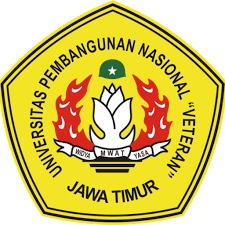
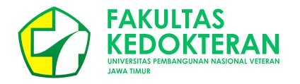
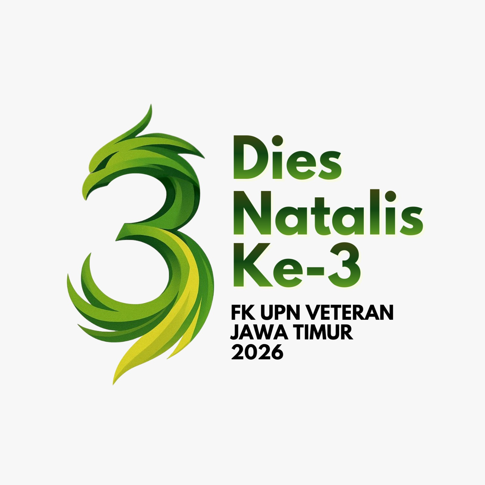
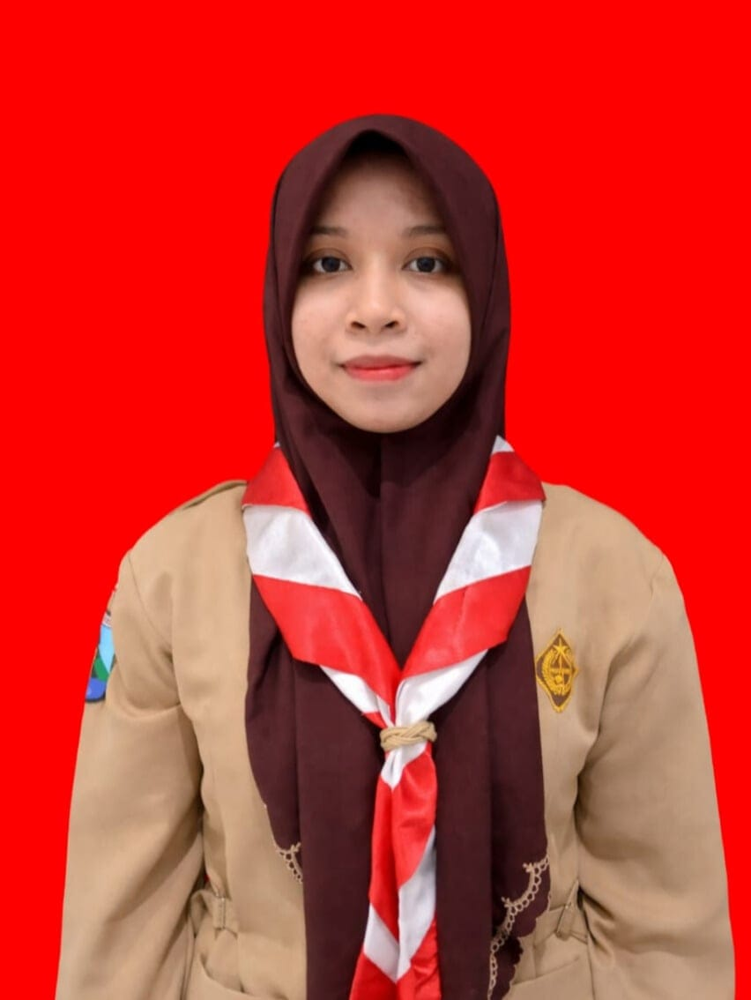
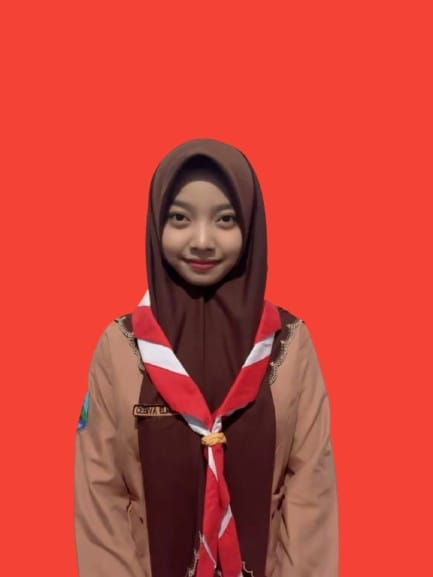
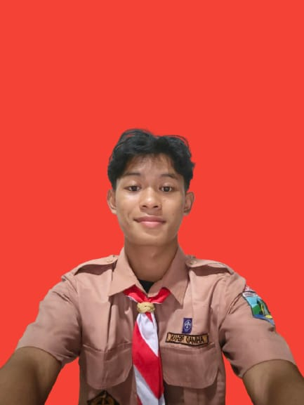
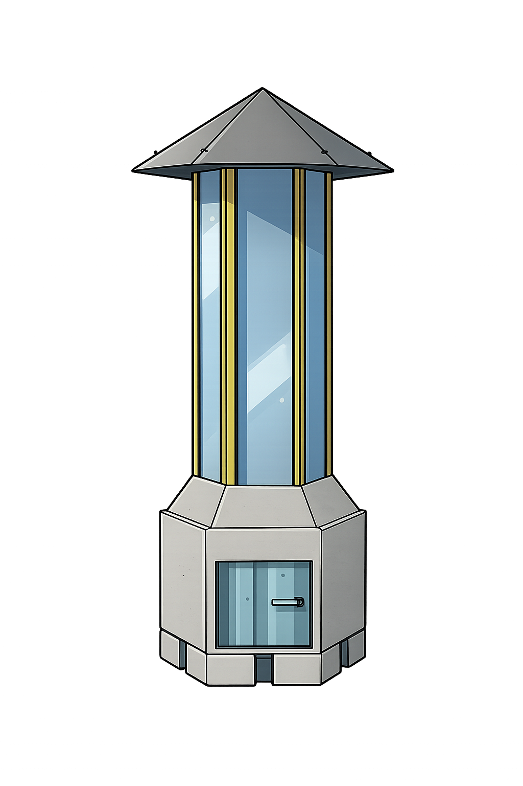

MARI WUJUDKAN UDARA YANG RAMAH, DENGAN GERAKAN C.E.R.A.H

ASAL SEKOLAH : SMA NEGERI 4 SIDOARJO
SEBAGAI : KETUA TIM

ASAL SEKOLAH : SMA NEGERI 4 SIDOARJO
SEBAGAI : ANGGOTA TIM

ASAL SEKOLAH : SMA NEGERI 4 SIDOARJO
SEBAGAI : ANGGOTA
Melalui tema ADMONS (Advancing Disaster Medicine Odyssey in National Spirit), kami memaknai bencana sebagai perjalanan panjang yang menuntut kemajuan dan semangat kebangsaan. Dari subtema inovasi dan teknologi penanggulangan bencana, kami percaya ketangguhan lahir dari kemampuan beradaptasi dan mencipta. Melalui "Inovasi Tangguh Hadapi Bencana", kami menghadirkan harapan bahwa bangsa ini mampu bangkit dan berdiri lebih kuat.
- Warna hijau melambangkan kehidupan, pemulihan, dan harapan, sebagai pesan bahwa alam yang terjaga adalah napas bagi masa depan berkelanjutan.
- Warna kuning menjadi cahaya peringatan yang hangat namun tegas, mengingatkan agar manusia selalu waspada terhadap bahaya yang datang perlahan.
- Warna biru melambangkan ketenangan dan kebijaksanaan, menegaskan pentingnya kejernihan dalam menghadapi setiap tantangan.
- Warna abu-abu mencerminkan keseimbangan dan objektivitas, mengingatkan untuk bersikap bijak dalam menilai dan mengambil keputusan.
Elemen pabrik melambangkan aktivitas industri yang berpotensi menimbulkan pencemaran udara, menjadi dampak bencana lingkungan akibat emisi asap dan polutan.
Perubahan iklim ekstrim, aktivitas manusia yang tak terkendali, minimnya mitigasi dan kesadaran, serta menyempitnya ruang hijau sering menjadi akar bencana. Menyoroti ancaman ini mengajak kita untuk selalu waspada, meningkatkan kesiapsiagaan, dan mengambil tindakan nyata agar kehidupan tetap aman. Ancaman Penyakit, Diare, dermatitis, demam, dan ISPA mengintai saat bencana datang. Bencana tidak hanya merusak lingkungan, tetapi juga kesehatan manusia. Mengetahui risiko ini mengingatkan pentingnya menjaga kebersihan, memperkuat kesiapsiagaan, dan saling peduli antar sesama.
Indonesia termasuk salah satu negara rawan bencana, ribuan kejadian telah menelan 1.666 korban jiwa. Fakta ini menegaskan bahwa bencana bukan sekadar teori. Kesadaran, inovasi, dan tindakan nyata adalah kunci untuk melindungi diri, lingkungan, dan kehidupan yang lebih baik.
"Kuat Bersama Hadapi Bencana, Menuju Masa Depan Cerah"
Slogan ini dipilih karena menyatukan kekuatan kebersamaan dengan harapan. "Kuat bersama" menegaskan bahwa bencana harus dihadapi secara kolektif, sementara "menuju masa depan cerah" mengingatkan bahwa setiap upaya mitigasi, inovasi, dan kepedulian adalah langkah nyata untuk kehidupan yang lebih aman, sehat, dan berkelanjutan. Slogan ini menjadi ajakan optimis: meski bencana mengintai, manusia mampu bangkit, berinovasi, dan mencipta masa depan yang penuh harapan.
Aksi CERAH dipilih karena setiap langkahnya menjaga bumi dan manusia dari bencana. Cegah Emisi mengingatkan kita untuk mengurangi polusi dan pembakaran agar kebakaran tak mudah terjadi. Edukasi Lingkungan menyalakan kesadaran agar masyarakat siap menghadapi banjir, longsor, dan letusan gunung. Rawat Resapan memberi napas bagi tanah agar air terserap dan risiko bencana berkurang. Aksi Aman mendorong kita menggunakan sumber daya alam dengan bijak dan menjaga kebersihan. Hijaukan Bumi menanam harapan melalui pohon dan ruang hijau, menjaga keseimbangan alam. Dengan CERAH, tindakan kecil bersatu menjadi kekuatan nyata untuk masa depan yang lebih aman dan cerah

Algae Smartlamp adalah inovasi yang memadukan kecerdasan manusia dan alam. Mikroalga di dalamnya menghasilkan oksigen, menyegarkan udara, sekaligus menyiapkan manusia menghadapi bencana. Sensor canggihnya mampu membaca tanda-tanda banjir, longsor, dan ancaman lain, sehingga manusia dapat merespons lebih cepat dan tepat. Lampu ini menjadi simbol bahwa kreativitas dan teknologi bukan hanya gagasan, tetapi pelindung kehidupan yang nyata.
Sepanjang tahun 2025, bencana alam di Indonesia menyebabkan sekitar 1.112 hingga 1.666 orang meninggal dunia, dengan lebih dari 10-12 juta warga terdampak,
Bencana yang disebabkan faktor alam adalah bencana yang diakibatkan oleh peristiwa atau serangkaian peristiwa yang disebabkan oleh alam antara lain berupa gempa bumi, tsunami, gunung meletus, banjir, kekeringan, angin topan, dan tanah longsor. Sedangkan bencana karena faktor nonalam adalah bencana yang diakibatkan oleh peristiwa atau rangkaian peristiwa nonalam yang antara lain berupa gagal teknologi, gagal modernisasi, epidemi, dan wabah penyakit. Adapun bencana yang disebabkan faktor sosial adalah bencana yang diakibatkan oleh peristiwa atau serangkaian peristiwa yang diakibatkan oleh manusia yang meliputi konflik sosial antarkelompok atau antarkomunitas masyarakat, dan teror.
"Bencana alam memiliki potensi untuk memunculkan berbagai jenis penyakit. Penting mengetahui jenis-jenis penyakit yang rentan terjadi pasca bencana agar terhindar dari komplikasi yang lebih serius."
Not just a poster, but a warning. Bencana tidak selalu datang tiba-tiba ia bisa tumbuh dari kebiasaan manusia. Melalui inovasi, kami memilih untuk bergerak, karena saat manusia bertindak lebih cepat, bencana kehilangan ruangnya.